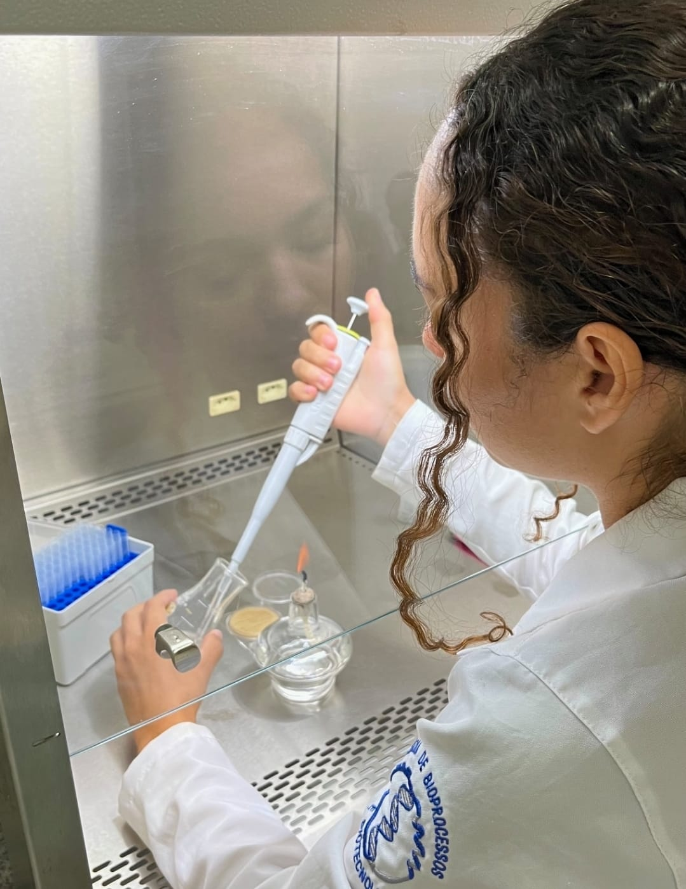
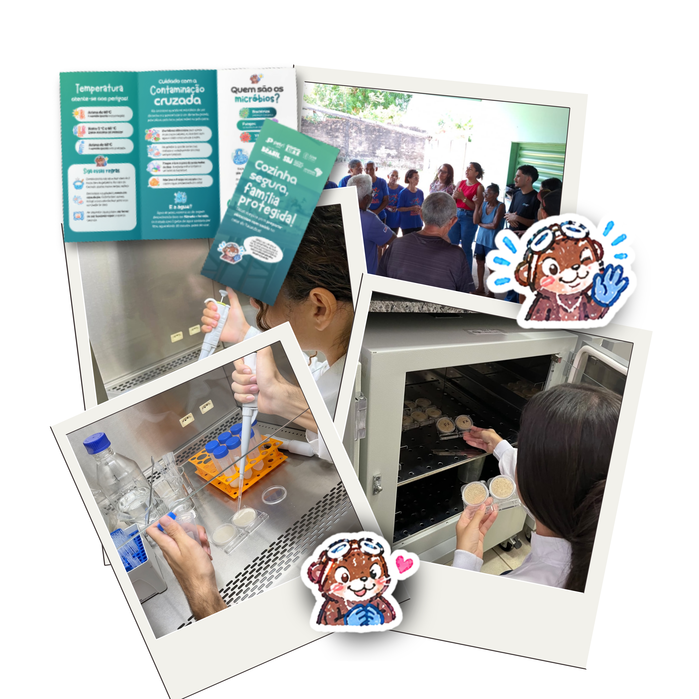
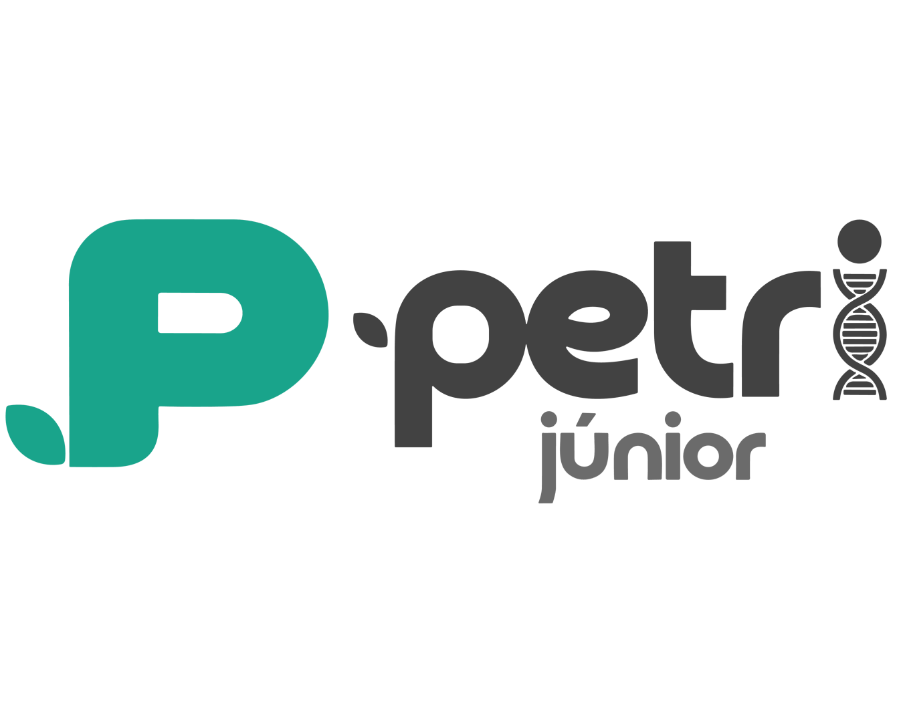

Análises laboratoriais e capacitações técnicas em biotecnologia
Conectando excelência acadêmica ao seu negócio, a Petri Júnior transforma conhecimento em soluções técnicas para alimentos, biossegurança, bioinformática, inovação e pesquisa.
Áreas de atuação
Soluções técnicas para transformar conhecimento acadêmico em impacto real.

Bioinformática
A inteligência de dados por trás da sua pesquisa com biológicos.

Biossegurança
Protocolos, mapas de risco e treinamentos para ambientes seguros.

Alimentos
Segurança alimentar e análises para conformidade regulatória.

Inovação e pesquisa
Desenvolvimento sustentável através da Engenharia de Bioprocessos.

Cursos e treinamentos
Capacitações técnicas para transformar conhecimento em prática.
Quem somos
“Em nossas raízes, cultivamos a crença de que, assim como o crescimento de uma cultura em placa de Petri, nossas ideias e projetos podem florescer, impactando positivamente a sociedade e o meio ambiente.”
Nascemos em setembro de 2023, impulsionados pela paixão pela ciência e pelo compromisso de transformar desafios em soluções inovadoras. Somos uma empresa júnior do curso de Engenharia de Bioprocessos e Biotecnologia da UFT Gurupi.
Conheça nossa históriaNossos indicadores
Acreditamos que a excelência técnica deve ser mensurável.
+0
Estabelecimentos atendidos
+0
Soluções entregues
+0
Impactados
+0
Membros ativos
Aprovação no programa Juventude Solidária
O poder público federal reconheceu a capacidade técnica da Petri e aprovou nosso projeto no programa nacional de juventude, levando ciência aplicada e segurança sanitária ao Cerrado tocantinense.
- Análises microbiológicas gratuitas em estabelecimentos de Gurupi e região.
- Consultorias e laudos gratuitos para pequenos negócios locais.
- Oficinas de segurança alimentar em escolas públicas e unidades do CRAS.
- Mobilização de jovens da comunidade junto à equipe Petri.

Reconhecimento Nível 1 no ENEJ
A Petri foi reconhecida no Palco de Reconhecimento do ENEJ 2026, premiação nacional da Brasil Júnior que celebra Empresas Juniores que atingem os indicadores de desempenho e cumprem as metas do Movimento Empresa Júnior.
- Palco de Reconhecimento Nível 1 entregue pela Brasil Júnior no maior evento de empresas juniores do país.
- Indicadores de desempenho atingidos e metas cumpridas no ciclo avaliativo do MEJ.
- Conquista coletiva de cada membro que acredita que ciência e gestão andam juntas.
Essa conquista é de cada petriniano que coloca alma no que faz. Obrigado à nossa equipe incrível.
Estamos sempre em movimento!
Veja nossos projetos, eventos, bastidores e ações de divulgação científica no Instagram. Acompanhe a rotina da Petri Júnior em tempo real.
Siga a Petri Júnior no InstagramBenches, conexões e integrações
Acreditamos que a inovação nasce da colaboração. Estamos sempre abertos a conexões estratégicas que conectam a vivência acadêmica à realidade corporativa de ponta.
